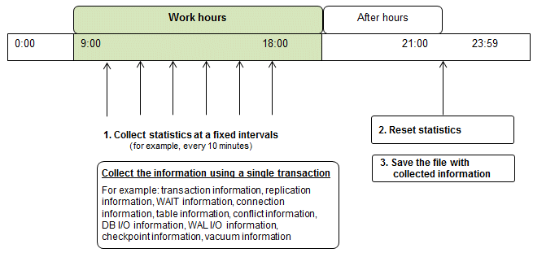

FUJITSU Enterprise Postgres enables you to collect information related to database activity. By monitoring this information, you can check changes in the database status.
This information includes wait information for resources such as internal locks, and is useful for detecting performance bottlenecks. Furthermore, you should collect this information in case you need to request Fujitsu technical support for an investigation.
Figure 7.1 Overview of information collection

Collect statistics at fixed intervals during work hours.
Accumulate the collected information into a file.
Wherever possible, collect data from the various statistics views using a single transaction, because it enables you to take a snapshot of system performance at a given moment.
Refer to "7.6.1 Information that can be Collected" for information on the system views that can be collected.
Reset statistics after work hours, that is, after jobs have finished.
Refer to "7.6.3 Information Reset" for information on how to reset statistics.
Save the file with collected information.
Keep the file with collected information for at least two days, in order to check daily changes in performance and to ensure that the information is not deleted until you have sent a query to Fujitsu technical support.
Where jobs run 24 hours a day, reset statistics and save the file with collected information when the workload is low, for example, at night.
Note
Statistics cumulatively add the daily database value, so if you do not reset them, the values will exceed the upper limit, and therefore will not provide accurate information.
The subsections below explain the following:
Information that can be collected
Collection configuration
Information reset